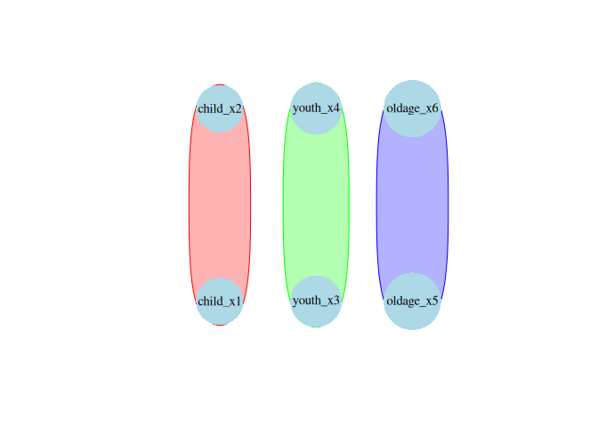

causalDisco provides a unified interface for causal discovery on observational data. It wraps multiple causal discovery backends under a common, consistent syntax.
Motivation
Causal discovery methods exist in many ecosystems, for example in bnlearn, pcalg, or Tetrad, but their APIs vary widely.
causalDisco unifies them under one clear grammar, making it easy to compare results, switch algorithms, and focus on scientific questions rather than package quirks.
Time to hit the disco 🪩
Installation
Install causalDisco
Install the package from GitHub using pak:
pak::pkg_install("https://github.com/BjarkeHautop/causalDisco")Installing Rust
causalDisco depends on the package caugi, which requires Rust to be installed on your system. See this guide for instructions on how to install Rust.
Installing Java / JDK
causalDisco provides an interface to the Java library Tetrad for causal discovery algorithms. To use algorithms from Tetrad you need to install JDK 21 (or newer) here (or look at Tetrad’s Java setup guide).
The current supported version of Tetrad can then be installed by calling
causalDisco::install_tetrad()Example
With causalDisco you can currently run causal discovery algorithms from the packages causalDisco itself, the Java library Tetrad, bnlearn, and pcalg.
library(causalDisco)
#> causalDisco startup:
#> Java heap size requested: 2 GB
#> Tetrad version: 7.6.8
#> Java successfully initialized with 2 GB.
#> To change heap size, set options(java.heap.size = 'Ng') or Sys.setenv(JAVA_HEAP_SIZE = 'Ng') *before* loading.
#> Restart R to apply changes.
# load data
data("tpcExample")
# define background knowledge object
kn <- knowledge(
tpcExample,
tier(
child ~ starts_with("child"),
youth ~ starts_with("youth"),
old ~ starts_with("old")
)
)
# use Tetrad PC algorithm with conditional Gaussian test
# Requires Tetrad to be installed
if (check_tetrad_install()$installed) {
tetrad_pc <- pc(engine = "tetrad", test = "conditional_gaussian", alpha = 0.05)
disco_tetrad_pc <- disco(data = tpcExample, method = tetrad_pc, knowledge = kn)
# similarly, one could do
tetrad_pc <- tetrad_pc |> set_knowledge(kn)
disco_tetrad_pc_new <- tetrad_pc(tpcExample)
}
# use causalDisco's own tges algorithm with temporal BIC score
cd_tges <- tges(engine = "causalDisco", score = "tbic")
disco_cd_tges <- disco(data = tpcExample, method = cd_tges, knowledge = kn)You can visualize the resulting causal graph using the plot() function:
plot(disco_cd_tges)
TODO
Tetrad does not use tier knowledge correctly yet.
Our tges algorithm does not yet support forbidden/required edges from knowledge objects.
Piping as done above for Tetrad loses knowledgetiers information.
List of available tests for
pc(and more probably)? Can see “conditional_gaussian”, “mi”, and “fisher_z” exists. What else? I guess the idea was to grab these from the engine dynamically?inst/roxygen-examples/TetradSearch_example.R fails for set.seed(16) (works for seed 1-15) with error:
# Error in .jcall("RJavaTools", "Ljava/lang/Object;", "invokeMethod", cl, :
# java.lang.RuntimeExceptionMaybe v7.6.9 fixes it?
Make vignettes
Long term: Move to Tetrad v7.6.9 v7.6.9 removes this entire folder
Was removed in this commit https://github.com/cmu-phil/tetrad/commit/295dceef6b83ac08ff0032fb194cf3ee5e429337#diff-adf829223cc59eac11682310f8a77c0ec3cf26a5b4310d75ec8edfaa86dd285b
Changelog says “and a generalization of GFFC (Generalized Find Factor Clusters) of FOFC and FTFC, providing multiple strategies for discovering latent clusterings from measurement data.”
so we need to implement this in causalDisco (help?)